Configurator UI¶
The Configurator UI is a terminal app for editing a Skim configuration
without writing YAML by hand. Every field in the UI maps to an entry in
config-file.md; the Configurator only adds an
interactive front end for the same schema.
Launch it with skim configure -i. To open an existing config, pass
-c <path>; to seed the editor from a keymap file, pass -k <path>. See
skim configure for the full set of launch flags.
The UI requires the optional textual extra. Install it with
pip install qmk-skim[tui] if skim doctor reports the dependency
missing.
Note
How to read this reference. The page is in two halves. The
Anatomy section names the Configurator's UI scaffolding —
tabs, the scrolling content area, the status bar, and the field
components used to edit values. The per-tab sections that follow
(Keyboard, Keycodes, Output) walk every editable field, organised
Tab → Section → Field. Every field block opens with a screenshot,
includes the same help text the in-app F1 overlay shows, and ends
with a Configures: line linking to the matching entry in
config-file.md — that's where you'll find the
visual semantics, defaults, and accepted values.
Anatomy¶
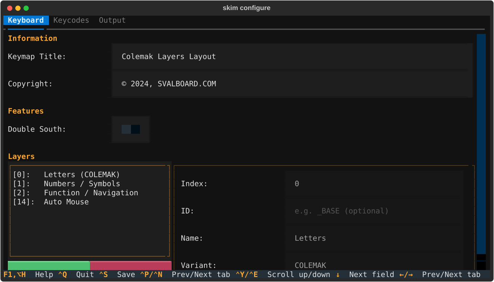
The Configurator window has three fixed pieces: a tab bar at the top, a scrolling content area in the middle, and a status bar at the bottom. The content area changes per tab; the tab bar and status bar persist.
Tabs¶
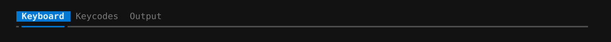
The tab bar lists the three top-level configuration groups.
| Tab | Schema target | What you edit |
|---|---|---|
| Keyboard | keyboard + a few output knobs |
Hardware features, layer roster, image title, copyright. |
| Keycodes | keycodes |
Pre-process rules, label overrides, macro and tap-dance metadata. |
| Output | output |
Layout, colors, borders, legends, palette. |
The active tab is highlighted in the tab bar. Switch tabs by clicking
the tab title or by pressing Ctrl+P (previous) / Ctrl+N (next). The
last-focused field on a tab is restored when you return to it, so
moving between tabs doesn't lose your place.
Scrolling content area¶
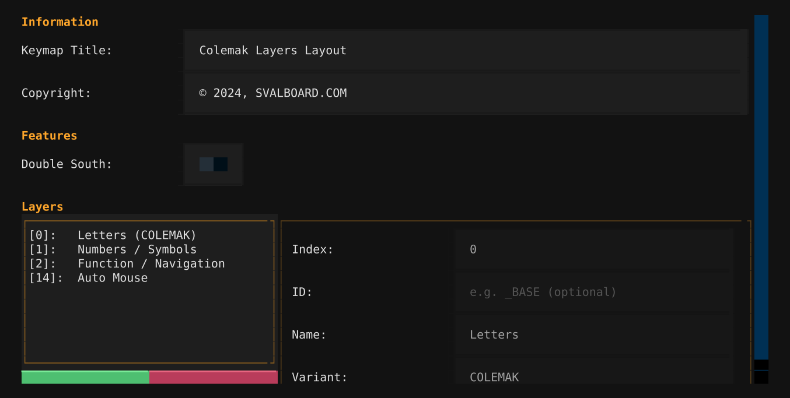
The middle of the window is a vertical scroller that holds every section of the active tab stacked top-to-bottom. Sections start with a colored section title (the accent color) and contain one or more field rows.
When the active tab is taller than the terminal window, the scroller
keeps the focused row visible — moving focus past the bottom of the
viewport scrolls the content automatically. You can also scroll
explicitly with Ctrl+E (down) and Ctrl+Y (up); the wheel and
PageUp / PageDown work too. A scrollbar on the right of the
scrolling area indicates how much of the tab is currently visible.
Status bar¶
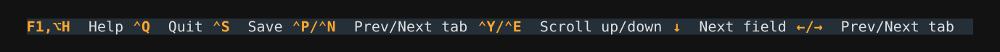
The status bar at the bottom of the window lists the key bindings that apply right now. The bindings are global — they work from any tab and regardless of which field is focused. The set is:
| Binding | Action |
|---|---|
Ctrl+Q |
Quit (prompts to save unsaved changes). |
Ctrl+S |
Save the current state to disk. |
Ctrl+P |
Switch to the previous tab. |
Ctrl+N |
Switch to the next tab. |
Ctrl+E |
Scroll the content area down. |
Ctrl+Y |
Scroll the content area up. |
Tab |
Move focus to the next field. |
Shift+Tab |
Move focus to the previous field. |
F1 / Alt+H |
Open the help overlay. |
Modal dialogs (save target, overwrite confirm, quit confirm, help) carry their own bindings — those replace the main set while the dialog is open, then disappear when the dialog closes.
Field components¶
Every editable row uses one of a small set of components, plus a left-aligned label that names the field. The label width is fixed (22 cells) so labels and fields line up across rows in the same section.
Text input¶
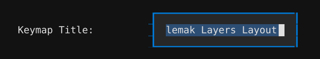
A single-line text editor. Each keystroke updates the underlying
config field immediately — there is no per-field commit step. Empty
input maps to null for fields whose schema accepts null.
Pressing Escape does not roll back changes in a plain text
input; the rollback affordance only exists inside a
list/detail pane, where the pane's
edit lifecycle wraps every field it contains.
Key bindings¶
Inside a list/detail pane the input takes part in the pane's edit lifecycle:
| Binding | Action |
|---|---|
Enter |
Commit changes and exit edit mode |
Escape |
Discard changes and exit edit mode |
Outside a list/detail pane the input has no extra bindings — every keystroke updates the underlying field directly.
Numeric input¶
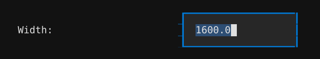
Visually identical to the text input. Numeric fields are plain text boxes with no input filtering — you can type any character. The underlying handler tries to parse the value as a number on each keystroke; if parsing fails, the previous numeric value is kept and the input keeps its current text without visible feedback. Watch the rendered output (or the matching field in the YAML preview) to confirm the value took.
Key bindings¶
Identical to the text input's key bindings.
Switch¶
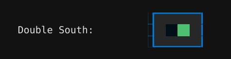
A two-state toggle. Click the switch or press Space / Enter while
focused to flip it. The change commits immediately; there is no
edit / cancel cycle.
Key bindings¶
| Binding | Action |
|---|---|
Enter / Space |
Toggle the switch |
Select¶
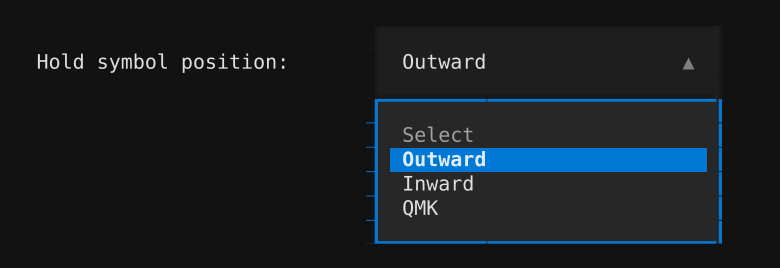
A drop-down. Enter or Space opens the list; arrow keys move the
highlight; Enter commits the highlighted entry; Escape closes the
list without changing the field.
Key bindings¶
| Binding | When closed | When open |
|---|---|---|
Enter / Space |
Open the dropdown | Commit the highlighted option |
Escape |
Discard pending changes¹ | Close the dropdown without changing the value |
↑ / ↓ |
— | Move the highlight in the dropdown |
¹ Discard only applies inside a list/detail pane that's in edit mode;
otherwise Escape is a no-op.
Color input¶
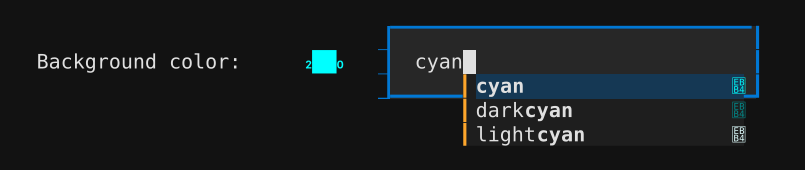
A text input paired with a live color swatch in the same row. The
input accepts any CSS color value the schema allows (named colors,
#RRGGBB, rgb() / hsl() strings); the swatch updates as you type.
An autocomplete list suggests CSS color names while you're typing.
Key bindings¶
| Binding | Action |
|---|---|
Alt+↑ |
Increase saturation by 0.05 (HSL nudge) |
Alt+↓ |
Decrease saturation by 0.05 (HSL nudge) |
Alt+→ |
Increase lightness by 0.05 (HSL nudge) |
Alt+← |
Decrease lightness by 0.05 (HSL nudge) |
The Alt+arrow HSL nudges only fire when the input currently holds a
six-digit hex color (#RRGGBB); named colors, three-digit hex, and
rgb() / hsl() strings are silently skipped. Inside a list/detail
pane, the input also responds to Enter / Escape for commit /
discard.
List/detail pane¶
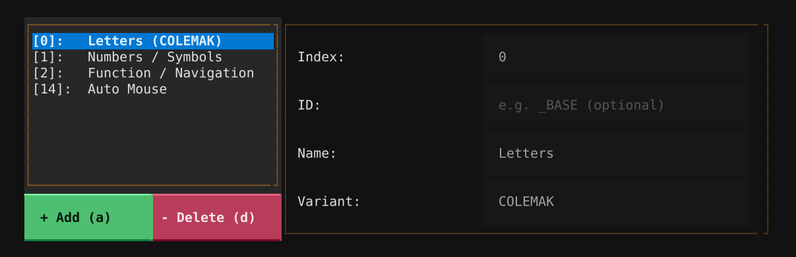
A two-column widget: a scrolling list of entries on the left, a form for the selected entry on the right. The list side is fixed at about a third of the row width; the detail side fills the rest.
The list/detail pane has its own edit lifecycle — entries are
read-only until you press Enter (or click into a detail field),
which puts the row into edit mode. From edit mode:
Entercommits the changes and returns to read-only.Escapediscards the changes and returns to read-only.- Clicking outside the detail area auto-commits.
Two buttons at the top of the list manage the list itself:
+ Add (a)— append a new entry with default values and immediately enter edit mode. Pressingawhile the list is focused does the same.- Delete (d)— remove the selected entry. Pressingdwhile the list is focused does the same. Removal is immediate; useCtrl+Qto exit without saving if you remove the wrong row.
To reorder entries, focus the list and press m. The selected row gets
a ↕ move indicator; use the arrow keys to slide it up or down and
Enter to commit the new position (or Escape to cancel).
Key bindings¶
When the list is focused:
| Binding | Default behaviour | In move mode |
|---|---|---|
↑ / ↓ |
Move the cursor between entries | Move the selected entry up / down |
Enter |
Edit the selected entry | Confirm the new position |
Escape |
— | Cancel the move (rollback) |
m |
Enter move mode | — |
a |
Add a new entry (same as the + Add button) |
— |
d |
Delete the selected entry (same as the - Delete button) |
— |
Once the pane is in edit mode, focus moves to the detail-side inputs which carry their own per-component bindings (Text input, Select, Switch, Color input).
Keyboard tab¶
The Keyboard tab gathers everything that's specific to your physical keyboard build and how it's identified in the rendered output: a title and copyright line for the overview image, the double-south hardware toggle, and the roster of QMK layers Skim should render.
Info¶
Text overlays Skim renders on the overview image. Both fields are optional — leave them blank to fall back to Skim's defaults (a title derived from the keymap's filename, and no copyright line).
Keymap Title¶
The text used as title in the overview keymap image (individual layer keymap images use the layer name as title).
Leave empty to use an auto-generated title based on the config filename.
Examples: My Svalboard Layout, COLEMAK-DH, Gaming Keymap
Configures: output.keymap_title
Copyright¶
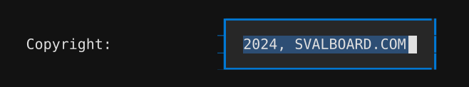
Copyright text, usually rendered at the bottom-right corner of the overview keymap image.
Leave empty to omit the copyright notice.
Example: (c) 2024 Your Name, © 2024, SVALBOARD.COM
Configures: output.copyright
Features¶
Hardware-feature toggles for the keyboard. Today this is just the double-south finger cluster; the section exists as a slot for future hardware variants.
Double South¶
When enabled, each finger key cluster renders with an extra south key.
This matches the Svalboard hardware configuration with an additional south key per cluster. Enable this if your physical keyboard has the extra south keys.
Configures: keyboard.features.double_south
Layers¶
The roster of QMK layers Skim renders. Each entry binds a firmware layer index to a human-readable identity (name, optional ID, optional variant), and the list's order controls how layers stack in the overview image.
Layers¶
The list of keyboard layers that SKIM will generate keymap images for. Each layer must be present in the keymap used to render the images, but not all layers from the keymap need to be listed here.
If you don't want a layer to be rendered in the overview keymap image, remove it from this list.
Configures: keyboard.layers
Layer Index¶
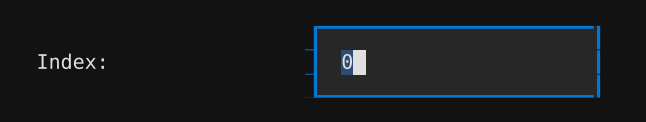
The QMK firmware layer number (0–31).
This must be a unique integer matching the layer index defined in your QMK keymap. Layer 0 is typically the base/default layer.
Changing the index will re-sort the layer list automatically.
Configures: keyboard.layers[*].index
Layer ID¶
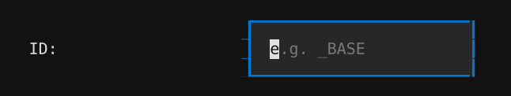
Only relevant for keymaps generated with the c2json QMK utility.
When rendering keymaps from a standard QMK keymap (when you edited the
keymap.c file in the QMK or user space repository), if you created a C macro
to represent your layer (e.g. #define _BASE 0), the output of the c2json
command will use the macro name instead of the layer index in keycodes like
LT(_BASE) or TO(_BASE). For this reason, you need to tell SKIM how to
associate your layers with these macros.
The ID field is where you tell SKIM what is the macro name you used.
Leaving this field empty will make SKIM use only numeric indices to match layers.
Configures: keyboard.layers[*].id
Layer Name¶
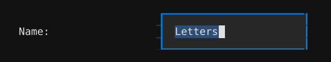
A human-readable name for the layer (e.g. Letters, Navigation, Symbols).
This is used as the keymap title for individual layer keymap images, and as the layer name in the overview keymap image.
Configures: keyboard.layers[*].name
Layer Variant¶
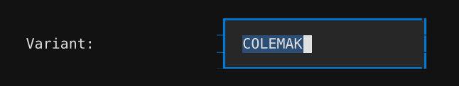
An optional variant descriptor for the layer (e.g. COLEMAK, QWERTY).
When set, the variant is displayed as an additional text indicating the layer variant on the overview keymap image.
Leave empty if the layer has no variant.
Configures: keyboard.layers[*].variant
Keycodes tab¶
The Keycodes tab controls the pipeline that turns raw QMK keycode strings into the labels Skim paints on each key. Pre-process rules rewrite non-standard keycodes into ones the bundled resolver knows; overrides force a specific label for a chosen keycode; the macros and tap-dances sections give those special keys human-friendly names for the legend tables.
Pre-process¶
Search-and-replace rules that run before Skim's bundled keycode resolver looks anything up. Use these to normalise custom firmware keycodes onto the standard QMK constructs the resolver already knows.
Pre-process Keycodes¶
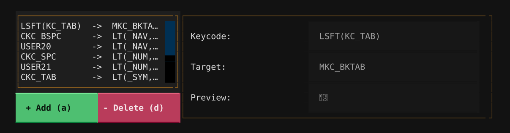
A list of keycode pre-processing rules. Each rule maps a custom keycode to a target keycode expression that replaces it before rendering.
Use this to define custom keycodes (like MKC_BKTAB) that expand to QMK expressions (like LSFT(KC_TAB)) in the rendered keymap.
Configures: keycodes.pre_process
Pre-process — Keycode¶
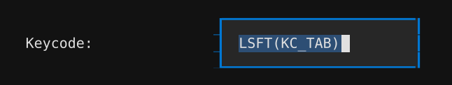
The source keycode to match. This is the keycode as it appears in your QMK keymap.
Typically a custom macro keycode (e.g. MKC_BKTAB, MKC_COPY), but any
expression may also be used as a source for conversion.
Autocomplete is available — start typing to see suggestions.
Configures: keycodes.pre_process[*].keycode
Pre-process — Target¶
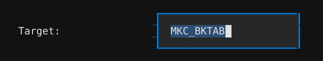
The replacement expression. This is what SKIM will use to replace any occurrence of the defined keycode.
This replacement happens before any label parsing, which means that
if you place a QMK keycode expression here (e.g. LSFT(KC_TAB),
LT(2,KC_SPC), etc.), SKIM will replace such expression with the correct key
label later.
The Preview field below shows how the resolved label will appear in the rendered keymap.
Configures: keycodes.pre_process[*].target
Overrides¶
Force the rendered label for a specific keycode after the bundled
resolver has run. Common uses: spelling words out (KC_SPC →
"Space"), choosing a glyph (KC_ENT → "↵"), or pointing a
custom keycode at a specific icon.
Keycode Overrides¶
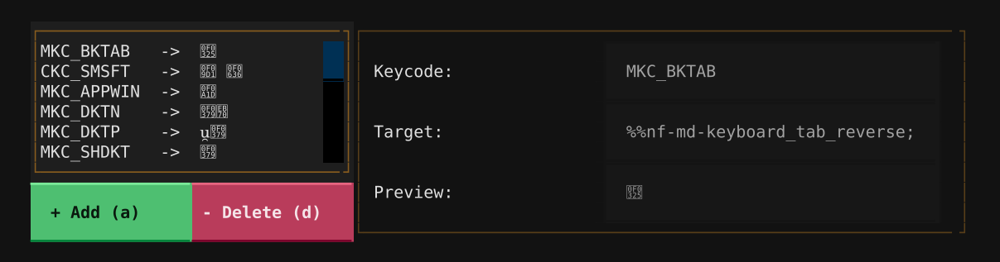
A list of label overrides for keycodes. Each override customizes how a specific keycode is displayed in the rendered keymap.
Use this to replace default keycode labels with custom text, icons, or NerdFont glyphs.
Configures: keycodes.overrides
Override — Keycode¶
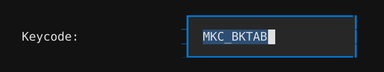
The keycode whose display label you want to customize.
This should match a keycode exactly as it appears in your QMK keymap or in the pre-process target.
Autocomplete is available — start typing to see suggestions.
Configures: keycodes.overrides[*].keycode
Override — Target¶
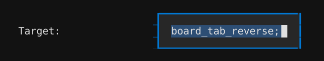
The custom label to display for this keycode. Supports three formats:
- Plain text:
Escape— displays the text as-is - Keycode reference:
@@KC_ESC;— resolves to the label of another keycode - NerdFont glyph:
%%nf-md-keyboard;— inserts a NerdFont icon
You can combine formats: %%nf-md-arrow-left; Back
Type @@ to trigger keycode autocomplete, or %% to trigger NerdFont glyph autocomplete.
Configures: keycodes.overrides[*].target
Macros¶
Friendly names for QMK macro slots. Each entry binds a macro
identifier (M0 … M49 for Vial / Keybard keymaps, or a
#define name for c2json keymaps) to the label Skim shows in the
macros legend. Previews are auto-generated from the keymap and
shouldn't be edited by hand.
Macros¶
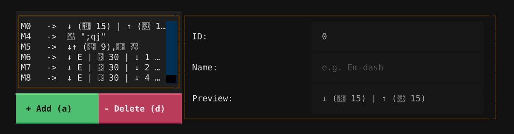
A list of macro definitions referenced by Mn (or QK_MACRO_n, or
MACRO_n, where n is a number, usually between 1 and 50) keycodes
in the keymap. Each entry has a stable id matching the keycode
reference, an optional human-readable name surfaced by the renderer,
and a read-only preview summarising the macro's actions.
When you bootstrap the config from a keymap file (skim config -k …),
existing macro slots from the keymap are pre-populated here.
Manually-added entries start with the preview "Undefined" until the
next bootstrap fills them in.
Configures: keycodes.macros
Macro — ID¶
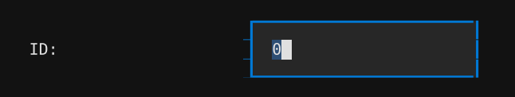
The id used to reference this macro from the keymap. For numeric
references like M5 or MACRO_5 the id is the matching string
("5"). For named macros (MACRO_MY_THING) use the name portion
("MY_THING").
Each id must be unique within the macro list. Editing the id moves the binding — the renderer matches macros to keycodes by id.
Configures: keycodes.macros[*].id
Macro — Name¶
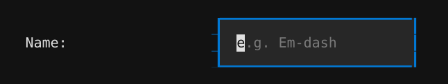
A human-readable name for the macro, surfaced by the renderer alongside the macro icon. Leave empty to keep the macro unnamed.
Configures: keycodes.macros[*].name
Tap-dances¶
Friendly names for QMK tap-dance slots, mirroring the Macros
section. Each entry binds a tap-dance identifier (TD0 … TD49)
to the label that appears in the tap-dance legend.
Tap Dances¶
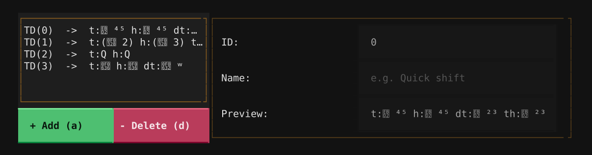
A list of tap-dance definitions referenced by TD(n) keycodes. Each
entry carries a stable id, an optional name, and a read-only preview
summarising the tap / hold / double-tap / tap-then-hold actions.
When you bootstrap the config from a keymap file (skim config -k …),
existing tap-dance slots from the keymap are pre-populated here.
Tap dances whose every action is empty are skipped during bootstrap.
Configures: keycodes.tap_dances
Tap Dance — ID¶
The id used to reference this tap dance from the keymap. For numeric
references like TD(0) the id is the matching string ("0"). Named
tap dances (TD(MY_TD)) use the name portion.
Each id must be unique within the tap-dance list. Editing the id moves the binding — the renderer matches tap dances to keycodes by id.
Configures: keycodes.tap_dances[*].id
Tap Dance — Name¶
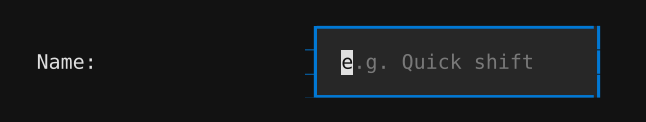
A human-readable name for this tap dance, surfaced by the renderer alongside the tap-dance icon. Leave empty to keep the tap dance unnamed.
Configures: keycodes.tap_dances[*].name
Output tab¶
The Output tab controls how the rendered images look: the canvas size, the spacing around the keymap, the chrome around the page, the legends shown alongside each layer, and the colors used for the keys themselves.
Page¶
The canvas itself. Width drives the entire image's scale, the spacing fields push the keymap inward from the edges, and the border block draws an optional rounded frame around the whole thing.
Layout Width¶
The total width of the generated keymap image.
Default: 800.0
Larger values produce wider keymap images. The image height adjusts automatically based on the layer layout or the number of layers for the overview keymap image.
Configures: output.layout.width
Layout Margin¶
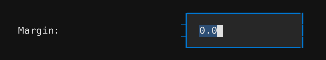
Outer margin around the entire keymap in pixels.
Default: 0.0
Adds empty space outside the keymap border (if enabled) or content edge.
Configures: output.layout.spacing.margin
Layout Inset¶
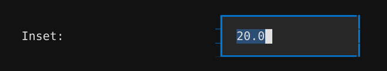
Inner padding between the keymap border and the key content in pixels.
Default: 20.0
Controls the spacing between the outer border and the keymap layout.
Configures: output.layout.spacing.inset
Border Enabled¶
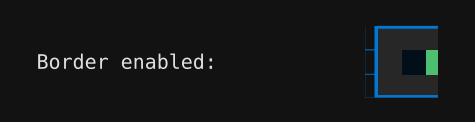
When enabled, a border is drawn around the entire keymap.
The border width and corner radius can be configured separately.
Configures: output.style.border
Border Width¶
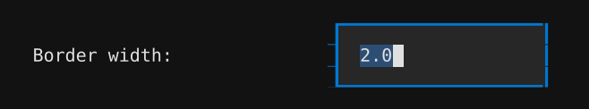
The stroke width of the keymap border in pixels.
Default: 2.0
Only applies when the border is enabled.
Configures: output.style.border.width
Border Radius¶
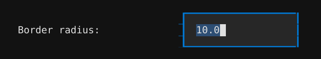
The corner radius of the keymap border in pixels.
Default: 10.0
Higher values create more rounded corners. Set to 0 for sharp corners.
Only applies when the border is enabled.
Configures: output.style.border.radius
Style¶
Toggles and choices that affect what details the renderer paints on each image — symbol and special-key legends, layer indicators and connectors, fall-through hints, and the position of hold- action symbols on tap-hold keys.
Hold Symbol Position¶
Controls where the hold function indicator appears on dual-function keys (keys that have both a tap and hold action).
- Outward — hold indicator faces away from the center of the keyboard
- Inward — hold indicator faces toward the center
- QMK — follows the argument order of the QMK macro functions that define
the keycode (e.g.
LT(1, KC_A)will render the hold on the left side and the tap on the right).
Configures: output.style.hold_symbol_position
Use System Fonts¶
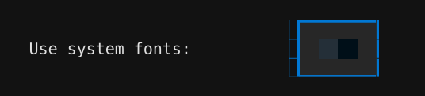
When enabled, the rendered keymap image uses system fonts instead of the bundled fonts.
Enable this if you want the keymap to use fonts available on the viewing system for SVG images, or in the host system for non-vector ones. Disable to ensure consistent rendering across all platforms using the bundled fonts.
Configures: output.style.use_system_fonts
Use Layer Colors on Keys¶
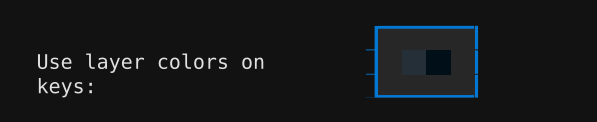
Only relevant for keys that trigger a layer change in your keymap.
When enabled, individual key backgrounds are tinted with the target layer color to indicate which layer they will trigger.
When disabled, all keys use their default background color.
Configures: output.style.use_layer_colors_on_keys
Show Layer Indicators¶
Only relevant for keys that trigger a layer change in your keymap.
When enabled, a layer indicator badge is displayed alongside each layer-triggering key in the keymap image.
These layer indicator badges show the layer index and color, helping identify which layer can be triggered.
Configures: output.style.layer_indicator.show
Show Layer Connectors¶
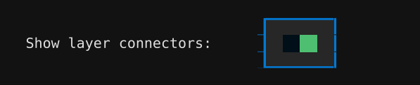
Only relevant for keys that trigger a layer change in your keymap on the overview keymap image.
When enabled, a dotted line connecting the layer indicator badge to the layer layout is drawn in the overview keymap image.
This option has no effect if the layer indicator option is disabled.
Configures: output.style.layer_connector.show
Show Transparent Fall-through¶
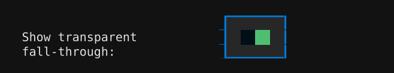
Only affects keys that use a QMK transparent keycode (KC_TRANSPARENT,
KC_TRNS, or _______) on a non-base layer.
When enabled, transparent keys borrow the label from the base layer (layer 0) and render it in a faded "ghost" color derived from the key's own background. This makes the fall-through behaviour visible at a glance without obscuring the layer's own color scheme.
When disabled, transparent keys are rendered blank — the previous skim behaviour.
The ghost color is the key's fill color with its HSL lightness shifted by 0.12 — lighter when the key sits at or below the layer's base color in the gradient, darker when it sits above. The shift is clamped to the [0, 1] range, so very light or very dark keys produce a subtler ghost.
Configures: output.style.show_transparent_fallthrough
Show special keys legend¶
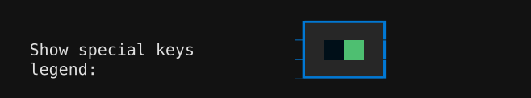
When enabled, per-layer images include a legend table of the macros and tap-dances referenced on that layer, and the overview image includes the full legend of every macro and tap-dance defined in the keymap.
Disable this option to omit those tables entirely — the layer images will only show the keyboard, and the overview will only show the layer grid.
Default: enabled.
Configures: output.style.legend_tables.macros.show and output.style.legend_tables.tap_dances.show
Show symbol legend¶
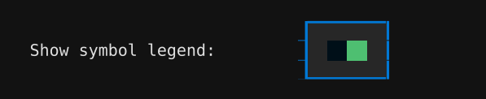
When enabled, per-layer images include a legend table describing the non-obvious glyphs used on that layer (e.g. modifier keys, Enter, Space, and layer-function symbols). The overview image aggregates symbols across all rendered layers.
Only keycodes whose rendered label is not self-evident (a plain letter, digit, or common punctuation) are included. The legend is separate from the macro / tap-dance legend.
Disable this option to omit the symbol legend from all rendered SVGs.
Default: enabled.
Configures: output.style.legend_tables.symbols.show
Symbol legend flow¶
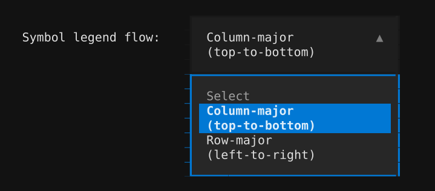
Controls how entries flow through the multi-column symbol legend below the keymap.
- Column-major (default): entries fill the leftmost column top-to-bottom, then continue at the top of the next column. Reading order is "down then right".
- Row-major: entries fill the top row left-to-right, then drop to the next row. Reading order is "right then down".
Both modes show the same set of entries; only the visual order changes.
Configures: output.style.legend_tables.symbols.flow
Palette¶
The chrome colors that frame every rendered image. Each takes any CSS color value the schema allows; see the chrome colors table on the output.style.palette field for the full list of defaults and visual swatches.
Background Color¶
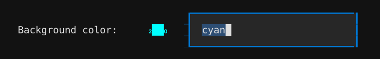
The background color used on the keymap image. This color is not used in the area defined by the margin option. The margin area is always transparent.
Default: white
Accepts CSS color names or hex values. Autocomplete is available for named colors.
Configures: output.style.palette.background_color
Text Color¶
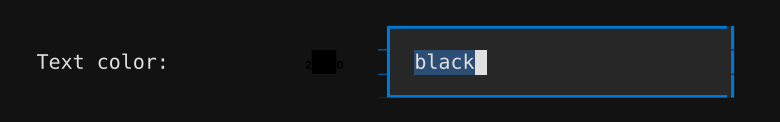
The primary text color used for non-key labels in the generated keymap image.
Default: black
Accepts CSS color names or hex values. Autocomplete is available for named colors.
Configures: output.style.palette.text_color
Border Color¶
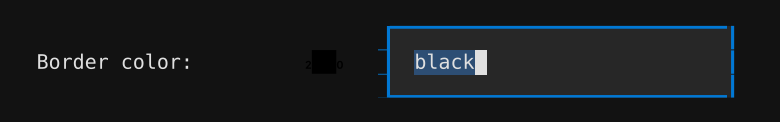
The color of the keymap border stroke.
Default: black
Only visible when the border is enabled. Accepts CSS color names or hex values. Autocomplete is available for named colors.
Configures: output.style.palette.border_color
Neutral Color¶
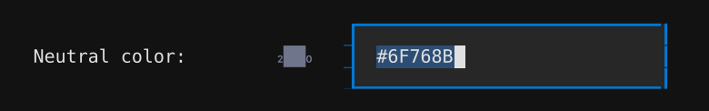
Each layer in the keymap images generated by SKIM has a main color associated with them. In the layout design used by SKIM, there are some keys in the thumb clusters that use a neutral color to distinguish them from the rest.
This neutral color field defines the color used in these thumb keys.
Default: #6F768B
Accepts CSS color names (e.g. slategray) or hex values (e.g. #6F768B).
Autocomplete is available for named colors.
Configures: output.style.palette.neutral_color
Key Label Color¶
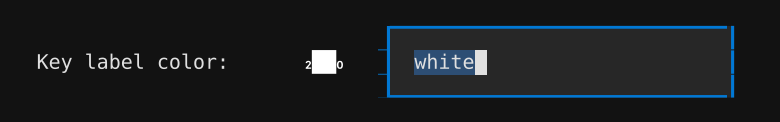
The color used for the text on individual key caps in the rendered keymap.
This color should contrast well with the colors used as background on individual keys. The default white color has good contrast with all the default background colors used on individual keys.
Default: white
Accepts CSS color names or hex values. Autocomplete is available for named colors.
Configures: output.style.palette.key_label_color
Macro Color¶
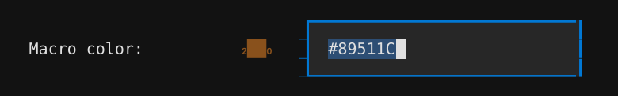
Color used for macro badges and the macro-table title block in the rendered keymap image. Marks macro-related elements with a consistent hue so they're easy to spot at a glance.
Default: #89511C
Accepts CSS color names (e.g. sienna) or hex values (e.g. #89511C).
Autocomplete is available for named colors.
Configures: output.style.palette.macro_color
Tap-Dance Color¶
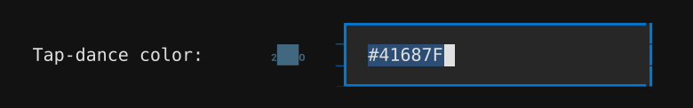
Color used for tap-dance badges and the tap-dance-table title block in the rendered keymap image. Marks tap-dance-related elements with a consistent hue so they're easy to spot at a glance.
Default: #41687F
Accepts CSS color names (e.g. steelblue) or hex values (e.g. #41687F).
Autocomplete is available for named colors.
Configures: output.style.palette.tap_dance_color
Layer Colors¶
Per-layer accent color. Each entry binds a layer to a base color
and an optional gradient, used for the layer's section header in
the overview image and the color-coded keys when
Use Layer Colors on Keys is
enabled.
Layer Colors¶
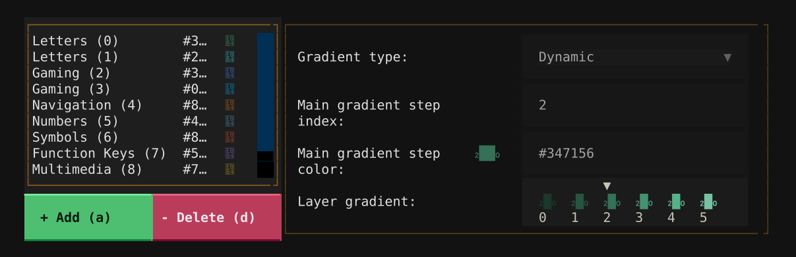
The list of color settings for each layer. Each entry defines how layer keys and indicators are colored in the rendered keymap.
Configures: output.style.palette.layers
Gradient Type¶
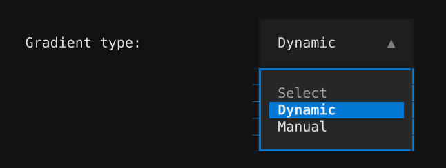
To make the generated keymap more polished and easy to read, SKIM does not use
the same color for adjacent keys whenever possible. Since each layer has a
single color associated with it, SKIM uses that color to create a gradient
with 6 steps to distribute across keys in the same cluster when the user
chooses the Dynamic gradient mode.
When the gradient type is set to Manual, you can set each of the 6 step
colors manually, regardless of contrast or hue.
Configures: output.style.palette.layers[*].gradient
Main Gradient Step Index¶
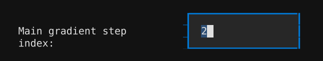
Which of the 6 gradient steps (0–5) is the "main" color for this layer.
In dynamic mode, this is the position where your chosen base color appears. Steps before it are lighter, steps after are darker. In manual mode, this marks which step is treated as the primary color.
Default: 2
Configures: output.style.palette.layers[*].color_index
Main Gradient Step Color¶
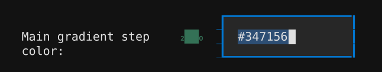
This is the color associated with this layer everywhere in the keymap. It is also the base color used to create a color gradient (dynamic mode only) to paint different keys on the layer layout.
The gradient is generated around this color at the step position defined by the gradient step index.
Accepts CSS color names or hex values. Autocomplete is available for named colors.
Configures: output.style.palette.layers[*].base_color
Manual Gradient Step Color¶
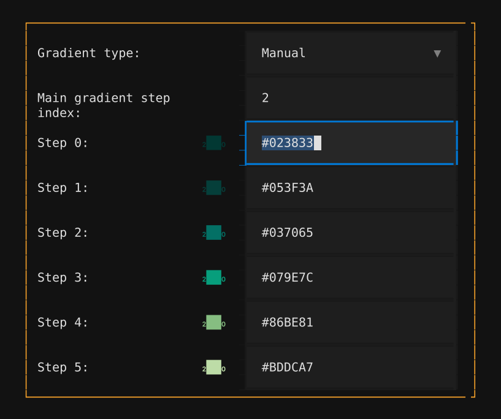
An individual color in the 6-step gradient (manual mode only).
Each step (0–5) can have its own color. Step 0 is typically the lightest and step 5 the darkest, but you are free to set any colors.
Enter a CSS color name (e.g. dodgerblue) or hex value (e.g. #1E90FF).
Autocomplete is available for named colors.
Configures: entries of output.style.palette.layers[*].gradient (one per manual gradient step; the configurator surfaces all six positions side-by-side as Step 0 … Step 5)